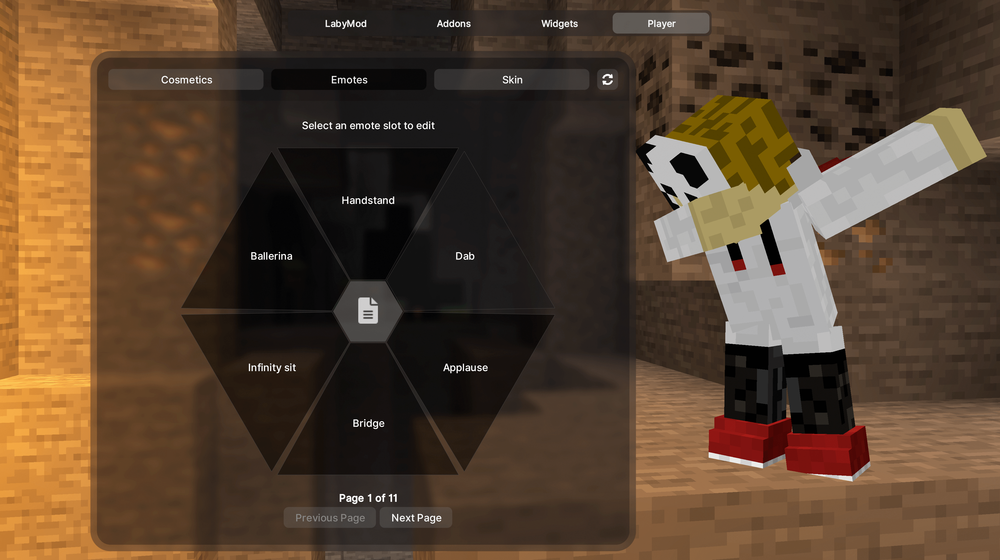
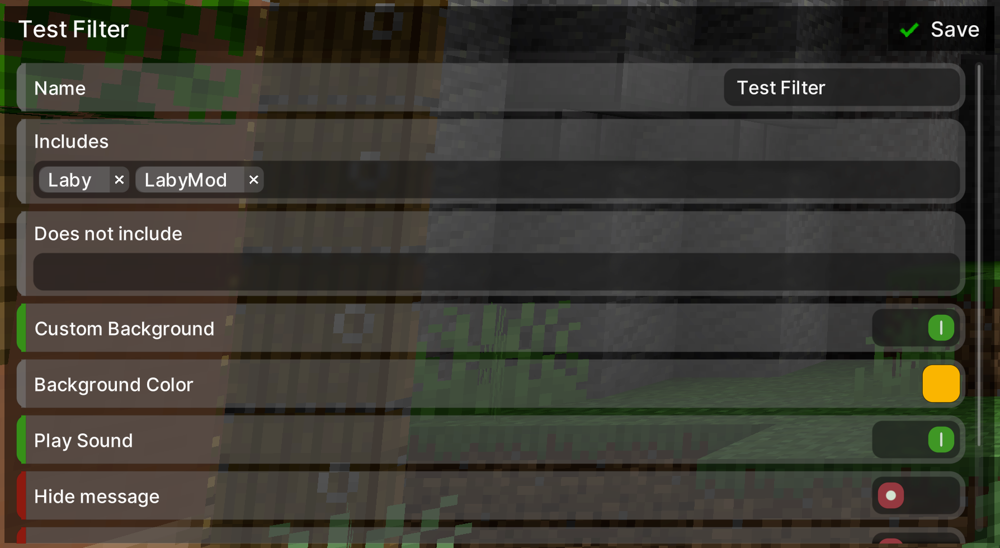

This is probably the last development update before the LabyMod 4 release date is announced. We would like to introduce you to some new features and changes we have been working on during the last weeks.
Dynamic Background
With the new Dynamic Background we have raised our UI to a completely new level. We have replaced the boring static Minecraft background in all menus without exception with an exciting 3D world.
It all starts when you launch Minecraft and fly from the loading screen through a cave to the start menu. Each submenu is now connected to its own little animation that changes your perspective within the cave. For example, if you connect to a Minecraft server now, you'll fly through the cave again and dive right into the game.
The background is completely rendered in real time and dynamic, so it's not just simple videos. You can look forward to many more variations, gimmicks and Easter Eggs in the future!
LabyMod Launcher
Actually, LabyMod 4 should have been released a few weeks earlier. However, over and over again, the official Minecraft launcher has made things difficult for us with several updates. In the end, we decided to develop our own LabyMod Launcher to rule out future problems. This brings a lot of advantages to us in development, as well as to you as users. The LabyMod Launcher itself starts much faster and more reliably than the Minecraft Launcher and is also much cleaner and easier to use.
For those who still want to use the official Minecraft Launcher or other third-party launchers, we still offer a separate installer.
The new LabyMod launcher will be distributed to beta testers in the next few days and then released at the same time as LabyMod 4.
Emote Customization
In the last blog article we already showed you the new possibilities to customize the cosmetics and the skin of your character directly in the game. From now on you can also manage and sort your emotes here! 
Chat Filter
The chat filter feature has also received a small facelift. The tab settings are now more clearly arranged and the filters are easier to create. 
Old Minecraft versions now run on Java17 and LWJGL3
A few weeks ago, we once again made major changes to LabyMod 4. The biggest changes mainly affect Minecraft versions from 1.8.9 to 1.17.1, which now run on Java17 and LWJGL3. But what do these changes mean for you?
Changes with Java17:
- No more certificate issues (name history, badge addon, account manager, screenshot upload, ...).
- Less crashes
- More detailed crash logs
- Performance
- All versions now run natively on Apple Silicon chips
Changes with LWJGL3:
- Performance
- Raw mouse input
- Improved keyboard mapping
Furthermore, we have completely recoded the ClassicPvP (1.7 animations) for all Minecraft versions.
Minecraft 1.20
Of course, we have also updated LabyMod 4 directly to the newly released Minecraft version 1.20 and in the meantime also 1.20.1. So you are as always immediately up to date with LabyMod 4!
Fabric Loader Addon
We have now also released a Fabric Loader Addon! This allows you to use Fabric mods together with LabyMod 4. To view and configure the mods, you can use Mod Menu, which can be opened directly from the LabyMod settings.
Please note, that this is still an experimental release and there are still many incompatibilities. We are working on gradually making more Fabric Mods compatible with LabyMod 4!
What's next?
We are currently doing some performance optimization on the old Minecraft versions again and are entering a short testing phase for the new LabyMod Launcher. This will be completed shortly. After that we will announce the official LabyMod 4 release date!
You don't want to wait until the official LabyMod 4 release and want to test the version now in the closed beta? With LabyMod+ you have the opportunity to try out all the new features right now!